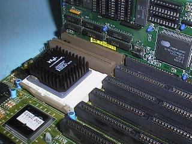

Phil Storrs PC Hardware book
Typical 486 Hardware
The 486 generation of PC hardware is marked by the wide spread use of SIMM RAM. At first typical System Boards had eight 30 pin SIMM sockets, 30 pin SIMM's had to be used in banks of four, because the devices were eight (nine with parity) bits wide. While the 486 processor was still current technology, the 32 (36 with parity) dit wide 72 pin SIMM was introduced.
A typical 486 system board with VESA local bus slots.
A close-up view of a VESA video card in a bus slot and an Intel 486 OverDrive processor.Note
- This board has sockets for both 72 pin and 30 pin 30 pin SIMM
- The level two cache chips are on the left lower side of the board
- The processor chip is an Intel 486 OverDrive chip. Look for the built in heat sink on this chip

Another close-up view of a VESA video card in a bus slot and an Intel 486 OverDrive processor.
On this board, look for the following:
- The 30 pin SIMM RAM sockets
- The keyboard connector
- The AMI BIOS ROM
- The power connector
- The Real Time Clock module and CMOS RAM backup battery.
This picture shows a 72 pin SIMM RAM module fitted to the same board.
The 486 system board shown above has:
- Both PCI and VESA (local bus) bus slots
- The PCI slots are the white connectors
- The Vesa slots are the brown connectors on the end of the ISA bus slots
- Four 30 pin SIM RAM sockets
- Two 72 pin SIM RAM sockets
- The BIOS ROM is at the bottom right hand side of the board
Here is a selection of 486DX2 and DX4 processors, note some have built-in heat sinks, others require a heatsink and fan.
Copyright © Phil. Storr, last updated 26th December 1998